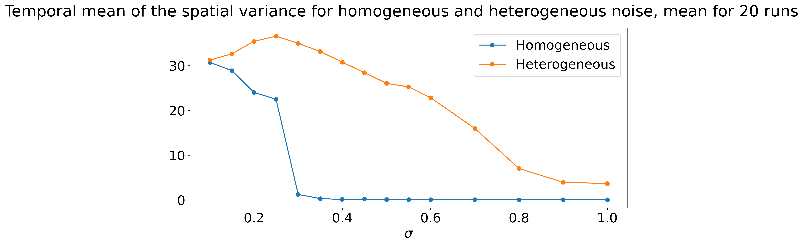

The concept of resilience in the framework of vegetation patterns: the R-tipping and N-tipping cases
Introduction
Different ideas about resilience:
- Holling (1973)
He defined two concepts: stability and resilience.
Stability is the ability of the system to return to an equilibrium state after a temporary disturbance. The more rapidly it returns, and with less fluctuations, the more stable it is.
Resilience determines the persistence of relationship between within a system and is a measure of the ability of these systems to absorb changes of state variables, driving variables and parameters, and still persist. The resilience is concerned wit hprobability of extinction.
Two ways to measure resilience:
Area of the domain of attraction
The height of the lowest point of the basin of attraction.
With those definitions, a system that shows great fluctuation is not stable but can be resilient. (=> Heterogeneous noise). This can happen because of the presence of different basin of attraction that can stabilize the system in an envious zone. An other gain from this high varaiblre system is that due to this variability the population can retain genetic and behavioral types with a larger variety.
- Holling (1996)
He used the same two definitions but with different names:
Stability -> Engineer resilience. We maintain efficiency
Resilience -> Ecological resilience. We maintain existence
Slobodkin (1964) : Evolution is a game, but a distinctive one in which the only payoff is to stay in the game
- Van De Leemput, Van Nes, and Scheffer (2015) : For spatially extended system local small disturbances can switch the whole spatial domain. This effect is linked to the Maxwell point.
In this paper we want to discuss those two definitions for vegetation patterns models in a N-tipping and R-tipping scenario and discuss the impact of Mixed state in this matter
Dimensional analysis
Identify a set of relevant dimensional quantities that includes the variables and parameters: \(\mathbf{X}=\{ X_{1}, ..., X_{n}\}\).
Split the set \(\mathbf{X}\) into a subset \(\mathbf{A}=\{ X_{1}, ..., X_{k}\}\) of dimensionally independent quantities and a complementary subset \(\mathbf{B}=\{ X_{1}, ..., X_{m}\}\), where \(m=n-k\) consisting of the remaining quantities in \(\mathbf{X}\) and including the quantitiy to be described by the scaling laws. The subset \(\mathbf{A}\) consists of quantities whose dimensions cannot be expressed in terms of the dimensions of other quantites in \(\mathbf{A}\), and has the additionnal property that dimension of any quantitiy in \(\mathbf{B}\) is expressible in terms of the dimensions of quantities in \(\mathbf{A}\).
For a pendulum, the set of dimensionnal quantities is \(\mathbf{X}=\{ g, L, M, T_{p}\}\)
- \(g\): gravitationnal acceleration
- \(L\): pendulum length
- \(M\): mass of the pendulum
- \(T_{p}\): oscillation period
Length, mass and oscillation period, None of those quantities can be expressed in terms of the others. So we defined \(\mathbf{A}=\{ L,M,T_{p}\}\) and \(\mathbf{B}=\{g\}\). Alternatively, since \(T_{p}\) is the quantitity that we want to be described with a scaling law, we can choose the subset \(\mathbf{A}\) to be \(\mathbf{A}=\{ L,M,g\}\) and \(\mathbf{B}=\{T_{p} \}\)
The dimensionally independent quantities of length, mass and time have fundamental dimensions. There are denoted by \(\mathcal{L}, \mathcal{M}\) and \(\mathcal{T}\). Other fundamental dimensions exist: temperature \(\Theta\) and charge \(\mathcal{Q}\).
Systems in which the dimensions of all quantities are expressible in term of a set \(\{ \mathcal{L}_{1}, ..., \mathcal{L}_{k}\}\) are called \(\mathcal{L}_{1}, ..., \mathcal{L}_{k}\) systems. The pendulum is thus a \(\mathcal{L}, \mathcal{M},\mathcal{T}\) system.
The final step in dimensional analysis is to use the subset \(\mathbf{A}\) to define dimensionless quantities, \(\Pi_{1},...,\Pi_{m}\), associated with the quantities in \(\mathbf{B}\), and reduce any relation among the \(n\) quantities in \(\mathbf{X}\) to relation among the \(m\) dimensionless quantities. The reduction is based on the \(\Pi\)-theorem
Dimensionally independant quantities
The subset \(\mathbf{A}=\{ A_{1}, ..., A_{k}\}=\{ X_{1}, ..., X_{k}\}\) of the set \(\mathbf{X}\) consists of dimensionally independent quantities. It is characterized by two properties:
Dimensionnal independence: None of the quantities in \(\mathbf{A}\) has a dimension that is expressible in terms of the dimension of other quantities in \(\mathbf{A}\) \[ [A_{1}]^{c_{1}}[A_{2}]^{c_{2}}...[A_{k}]^{c_{k}}=1 \text{ implies } c_{1}=...c_{k}=0 \]
Spanning: All other qunatities in \(\mathbf{X}\), i.e the complement subset, \(\mathbf{B}=\{ X_{k+1}, ..., X_{n}\}\) have dimensions that are expressible in terms of the dimensions of thequantities in \(\mathbf{A}\) \[ [B_{j}]=[A_{1}]^{\alpha_{1j}}...[A_{k}]^{\alpha_{1k}} \text{ where } \alpha_{ij} are rational numbers. \]
Consider a \(\mathcal{L} \mathcal{M}\mathcal{T}\) system with a set \(\mathbf{X}\) that includes velocity \(v\), density \(\rho\) and energy \(E\). The question is: does the set \(\mathbf{A}=\{v, \rho, E\}\) satisfy the property of dimensional independence?
Dimensionnal independence: we need to find \(c_{1},c_{2}\) and \(c_{3}\) that satisfy \[ [v]^{c_{1}}[\rho]^{c_{2}}[E]^{c_{3}}=1 \] Inserting in this equation the expressions \([v]=\mathcal{L}\mathcal{T}^{-1}\), \([\rho]=\mathcal{M}\mathcal{L}^{-3}\) and \([E]=\mathcal{M}\mathcal{L}^{2}\mathcal{T}^{-2}\) \[ (\mathcal{L}\mathcal{T}^{-1})^{c_1}(\mathcal{M}\mathcal{L}^{-3})^{c_2}(\mathcal{M}\mathcal{L}^{2}\mathcal{T}^{-2})^{c_3}=\mathcal{M}^{0}\mathcal{L}^{0}\mathcal{T}^{0} \] We then obtain the following linear equation \[ \begin{pmatrix} 1 & -3 & 2\\ 0 & 1 & 1\\ -1 & 0 & -2 \end{pmatrix} \begin{pmatrix} c_{1}\\ c_{2}\\ c_{3} \end{pmatrix} = \begin{pmatrix} 0\\ 0\\ 0 \end{pmatrix} \] Since the determinant of this matrix is non-zero, the only solution is the trivial solution \(\mathbf{c}=0\).
To test the second property, you need to check that the fundamental dimension (\(\mathcal{L}\mathcal{M}\mathcal{T}\)) are expressible in terms of \([v]\), \([\rho]\) and \([E]\). The dimension \(\mathcal{L}\) is expressible like that if there exist \(d_{1}\), \(d_2\) and \(d_3\) such thermostat \[ (\mathcal{L}\mathcal{T}^{-1})^{c_1}(\mathcal{M}\mathcal{L}^{-3})^{c_2}(\mathcal{M}\mathcal{L}^{2}\mathcal{T}^{-2})^{c_3}=\mathcal{M}^{0}\mathcal{L}^{1}\mathcal{T}^{0} \] This equation leads to a linear system \[ \begin{pmatrix} 1 & -3 & 2\\ 0 & 1 & 1\\ -1 & 0 & -2 \end{pmatrix} \begin{pmatrix} d_{1}\\ d_{2}\\ d_{3} \end{pmatrix} = \begin{pmatrix} 1\\ 0\\ 0 \end{pmatrix} \] And this system has an unique solution because the matrix has a non-null determinant. The same linear system exists for \(\mathcal{M}\) and \(\mathcal{T}\). With that methodology, we obtain the following: \[ \mathcal{L}=[v]^{-2/3}[\rho]^{-1/3}[E]^{1/3} \quad \mathcal{M}=[v]^{-2}[E] \quad \mathcal{T}=[v]^{-5/3}[\rho]^{-1/3}[E]^{1/3} \]
The \(\Pi\)-theorem
Define the dimesnion less qunatities \[ \Pi_{j}=\frac{B_{j}}{A_{1}^{\alpha_{1j}}... A_{k}^{\alpha_{kj}}} \] where the exponents \(\alpha_{ij}\) are chosen such that \[ [B_{j}]=[A_{1}]^{\alpha_{1j}}... [A_{k}]^{\alpha_{kj}} \] Any relation among the set, \(\mathbf{X}\), of relevant dimensional quantities that can be written in the form \[ f(\mathbf{X})=f(A_{1},...,A_{k},B_{1},...,B_{m})=0 \] can be rewritten as \[ \tilde{f}(\mathbf{X})=f(A_{1},...,A_{k},\Pi_{1},...,\Pi_{m})=0 \] Suppose now that \(B_{m}\) is the quantity of interest. We obtain from the previous equation \[ \Pi_{m}=h(A_{1},...,A_{k},\Pi_{1},...,\Pi_{m-1}) \] Since the quantities in the subset \(\mathbf{A}\) are dimensional, changing their units will change the value of \(\Pi_{m}\). But \(\Pi_{m}\) is non-dimensional and cannot be affected by unit changes. It therefore follows that the function \(h\) cannot depend on the quantities \(A_j\), \(j = 1, ..., k\). This leads to the result known as the \(\Pi\)-theorem, namely that the relation (5.13) among the \(n\) relevant dimensional quantities can be reduced to a relation among a smaller number, \(m\), of dimensionless quantities. \[ \phi (\Pi_{1},...,\Pi_{m})=0 \] or \[ \Pi_{m}=\phi(\Pi_{1},...,\Pi_{m}) \]
The pendulum is a \(\mathcal{L}\mathcal{M}\mathcal{T}\) system. We want to drive a scaling law for the period \(T_{p}\). The set of dimensional quantities are \(\mathbf{X}=\{L,M,g,T_p \}\) and we can define a subset \(\mathbf{A}=\{L,M,g\}\) of dimensionally independent quantities. and the dependent quantity \(\mathbf{B}=T_{p}\). Thus \(n=4\), \(k=3\) and \(m=1\). The dimensionless quantitity associated with \(T_{p}\) is \(\Pi_{1}=T_{p}\sqrt{g/L}\) because \([T_{p}]=[L]^{1/2}[g]^{-1/2}\).
The \(\Pi\)-theorem tells us that the relation among the \(n=4\) relevant dimensional quantity can be reduced to a relation among a smaller number \(m=1\) of dimensionless quantity: \[ \Pi_{1}=const \] Thus \(T_{p}=c \sqrt{L/g}\) where \(c\) is a underdetermined constant.
The relevant dimensional quantities are - \(E\) the energy released - \(\rho\) the initial air density - \(v\) the shockwave velocity - \(r\) the shockwave radius
The dimension of those quantities can all be expressed in terms of \(\mathcal{LMT}\), so this is a \(\mathcal{LMT}\) system. We know that \(A_{1}=v\), \(A_{2}=\rho\) and \(A_{3}=E\) forms a subset \(\mathbf{A}\) in which they are dimensonally independent quantities. Therefore, we identify \(B_1=r\) and conclude that \(n=4\), \(k=3\) a,d \(m=1\). The dimensionless quantity associated with \(r\) is \[ \Pi_{1}=\frac{rv^{2/3}\rho^{1/3}}{E^{1/3}} \] And according to the \(\Pi\)-theorem, \(\Pi_{1}=c\) and thus \[ r=c\left( \frac{E}{\rho v^{2}}\right)^{1/3} \]
The relevant dimensional quantities are - \(\rho\) the fluid density at the bottom of the cell - \(\Delta T\) the temperature difference accross the cell - \(\alpha\) the coefficient of thermal expansion - \(g\) the gravitationnal acceleration - \(d\) the cell height - \(\kappa\) the thermal diffusivity - \(\eta\) the shear viscosity (\(\eta=\rho \nu\) where $ $ is the kinematic viscosity) - \(\Delta p\) the pressure difference
The set of relevant dimensionnal quantities we consider is \(\mathbf{X}=\{ \rho, \alpha,g,d,\Delta T, \kappa, \eta , \Delta p\}\). Those quantities have the following dimensions: \[ \begin{matrix} [\rho]=\mathcal{L}^{-3}\mathcal{M} & [\alpha]=\Theta^{-1} & [g]=\mathcal{L}\mathcal{T}^{-2} & [d]=\mathcal{L} \\ [\Delta T]=\Theta & [\kappa]= \mathcal{L}^{2}\mathcal{T}^{-1} & [\eta]=\mathcal{L}^{-1}\mathcal{M}\mathcal{T}^{-1} & [\Delta p]= \mathcal{L}^{-1}\mathcal{M}\mathcal{T}^{-2}\\ \end{matrix} \] The dimension of those quantities can all be expressed in terms of \(\mathcal{LMT\Theta }\), so this is a \(\mathcal{LMT\Theta}\) system. We should to a subset \(\mathbf{1}\) of four dimensionally independent quantities. The four quantities \(\rho\), \(\alpha\), \(g\) and \(d\) involve \(\mathcal{LMT\Theta }\). We just have to chevk whether they are dimensionally independent. Here this is the case. We then have identified the subset \(\mathbf{A}\) with \(k=4\) quantities \(\{\rho, \alpha ,g , d \}\) and the complement subset \(\mathbf{B}\) with \(m=4\) quantities \(\{\Delta T, \kappa , \eta , \Delta p \}\). The dimensionless quantities associated are then \[ \begin{matrix} \Pi_{1}=\alpha \Delta T & \Pi_{2}=\frac{\kappa}{\sqrt{gd^{3}}} & \Pi_{3}= \frac{\eta}{\rho \sqrt{gd^{3}}} & \Pi_{4}=\frac{\Delta p}{\rho g d} \end{matrix} \] By the \(\Pi\)-theorem, we obtain,
\[ \Pi_{4}=\phi(\Pi_{1},\Pi_{2},\Pi_{3}) \] The scaling relation for the pressure difference is then \[ \Delta p = \rho g d \phi(\Pi_{1},\Pi_{2},\Pi_{3}) \]
Dimensional analysis can be useful when the equations are available for several reasons:
- Reducing the number of parameters.
- Finding similarities in the roles different parameters play.
- Identifying small parameters to apply perturbations techniques.
Consider a periodically forced damped surprising \[ m\frac{d^{2}x}{dt^{2}}+b\frac{dx}{dt}+kx=f \cos (\omega t) \] This equation contains an independent time varialbe \(t\), a dependent displacement variable \(x\) and five parameters: - \(m\) the spring masse - \(k\) the spring constant - \(b\) the damping constant - \(f\) the force amplitude - \(\omega\) the force frequency
The system is a \(\mathcal{LMT}\) class. And the subset \(\mathbf{A}= \{m,k,f\}\). The complement subset is \(\mathbf{B}\{x,t,b,\omega\}\) The dimensionless quantities associated with the elements of \(\mathbf{B}\) are \[ \begin{matrix} \Xi = \frac{x}{k^{-1}f} & \tau =\frac{t}{k^{-1/2}m^{-1/2}} & \beta = \frac{b}{k^{1/2}m^{1/2}} & \nu = \frac{\omega}{k^{1/2}m^{-1/2}} \\ \end{matrix} \] Expressing the dimensionnal quantities in terms of their dimensionless counterpart, we obtain \[ \frac{d^{2}\xi}{d\tau^{2}}+\beta \frac{d\xi}{d\tau}+kx=\cos (\nu \tau) \] Note that there are only twp parameters left \(\beta\) and \(\nu\) instead of the five.
Scaling of the Rietkerk
\[ \begin{align} \frac{\partial B}{\partial t} &= cg_{max} \frac{W \, B}{W+k_{1}}-dB+D_{B}\Delta B, \\ \frac{\partial W}{\partial t} &= \alpha O \frac{B+k_{2}w_{0}}{B+k_{2}}-g_{max} \frac{W \, B}{W+k_{1}}-r_{w} W+D_{W}\Delta W, \\ \frac{\partial O}{\partial t} &= R-\alpha O \frac{B+k_{2}w_{0}}{B+k_{2}}+D_{O}\Delta O, \end{align} \]
| Parameter | Definition | Value |
|---|---|---|
| \(c\) | Conversion of water uptake by plants to plant growth | \(10 \, \text{g} \, \text{mm}^{-1} \, \text{m}^{-2}\) |
| \(g_{max}\) | Maximum water uptake | \(0.05 \, \text{mm} \, \text{g}^{-1} \, \text{m}^{-2} \, \text{d}^{-1}\) |
| \(k_1\) | Half-saturation constant of specific plant growth and water uptake | \(5 \, \text{mm}\) |
| \(D_B\) | Plant dispersal | \(0.1 \, \text{m}^{2} \, \text{d}^{-1}\) |
| \(\alpha\) | Maximum infiltration rate | \(0.2 \, \text{d}^{-1}\) |
| \(k_2\) | Saturation constant of water infiltration | \(5 \, \text{g} \, \text{m}^{-2}\) |
| \(w_0\) | Water infiltratio nin the absence of plants | \(0.2\) |
| \(r_w\) | Soil water loss due to evaporation and drainage | \(0.2 \, \text{d}^{-1}\) |
| \(D_W\) | Diffusion coefficient for soil water | \(0.1 \, \text{m}^{2} \, \text{d}^{-1}\) |
| \(D_O\) | Diffusion coefficient for surface water | \(100 \, \text{m}^{2} \, \text{d}^{-1}\) |
| \(d\) | Plant mortality rate | \(0.25 \text{d}^{-1}\) |
Rescaling
| Default | Left | Right | Center | plus |
|---|---|---|---|---|
| \(t=\tilde{t}/t_{0}\) | \(t=\tilde{t}/t_{0}\) | \(b=B/k_{2}\) | \(w=W/k_{1}\) | \(p=P/k_{1}\) |
| \(D_{w}=\tilde{D}_{W}t_{0}/x_{0}^{2} = \tilde{D}_{W}/\tilde{D}_{B}\) | \(D_{o}=\tilde{D}_{O}t_{0}/x_{0}^{2}= \tilde{D}_{O}/\tilde{D}_{B}\) | \(\mu =dt_{0}\) | \(\alpha=\tilde{\alpha}t_{0}\) | |
| \(f=W_{0}\) | \(\gamma=k_{2}/(k_{1}c)\) | \(\nu=r_{W}t_{0}\) | \(p=Rt_{0}/k_{1}\) |
where \(t_{0}=1/(cg_{max})=1/(10*0.05)=2 \, d\) et \(x_{0}=\sqrt{\tilde{D}_{B}t_{0}}\)
\[ \begin{align} \frac{\partial b}{\partial t} &= \frac{w }{w+1}-\mu b+\Delta b, \\ \frac{\partial w}{\partial t} &= \alpha o \frac{b+f}{b+1}-\gamma \frac{w}{w+1}-\nu w+D_{w}\Delta w, \\ \frac{\partial o}{\partial t} &= p-\alpha o \frac{b+f}{b+1}+D_{o}\Delta w, \end{align} \]
Parameters:
- \(\mu\)
- \(f\)
- \(\gamma\)
- \(\mu\)
- \(D_{w}\)
- \(p\)
- \(D_{o}\)
R-tipping
From this, it is revealed that patches (in reality) disappear on a fast timescale – and satisfy the mentioned assumption that pateches disappear on a fast timescale – if the mean annual rainfall does not change faster than several tens of \(mm\, year^{-2}\). (From Bastiaasnsen, 2020)
- We start from one stable branch and we change the rainfall at a given rate to a different value.


We see that if the change is slow engouh we follow the branch until we reach an unstable solution. Then the system spends a certain time around this unstatble equilibrium before jumping to a stable branch. This is because the dynamic around those unstable states is slow. The eigenvalue associated with the unstable mode are sligthly positive close to the bifurcation point wich lead to this slow dynamic
If we do the same experiment but with a fast decrease, we see what we called an R-tipping. In that case, the fact that we decrease abruptly the rainfall lead to a bare soil solution.
We have found a typical timescale of \(\tau_{dim}2 d\) from the dimesnionnal analysis. We see that even for a rate of change of the background slower than the typical timescale of the system, the system undergoes a R-tipping.
From the computation of the eigenvalue for the initial condition, we find \(\tau_{eigen} =50 \, d\). So it doesn’t give much informations.
N-tipping
Why sould we add noise to a vegetation pattern system?.
Random perturbation on vegetations (heterogeneous)
Random perturbation on precipitation (homoheneous)
\[ \begin{split} \frac{\partial B}{\partial t} &= cg_{max} \frac{W \, B}{W+k_{1}}-dB+D_{B}\Delta B, +\sigma dW_{t}\\ \frac{\partial W}{\partial t} &= \alpha O \frac{B+k_{2}w_{0}}{B+k_{2}}-g_{max} \frac{W \, B}{W+k_{1}}-r_{w} W+D_{W}\Delta W, +\sigma dW_{t}\\ \frac{\partial O}{\partial t} &= R-\alpha O \frac{B+k_{2}w_{0}}{B+k_{2}}+D_{O}\Delta O+\sigma dW_{t}, \end{split} \] where \(dW_{t}\) is a Wiener process.
For the following, we consider two cases: an spatially homogeneous noise and a spatially heterogeneous noise.
For the homogeneous noise, the Wiener process is a Gaussian stochastic process \(W(x,t)\) with mean \(\mathbb{E}[W(t,x)=0]\) and standard deviation \(\sigma\). The correlation function \(\mathbb{E}[W(t,x)W(s,y)=\delta(t-s)]\).
The spatially heterogneous noise, the Wiener process is also a Gaussian stochastic process \(W(x,t)\) with mean \(\mathbb{E}[W(t,x)=0]\) and standard deviation \(\sigma\). But the correlation function \(\mathbb{E}[W(t,x)W(s,y)=\delta(t-s)\delta(x-y)]\).
This added noise represents the impact of small perturbation in the various field.
We will see in the following how this noise affects the behaviour of the system.
Experimental setup:
Size of the domain: \(L=100 m\)
Duration: \(20000 \, days\)
Rainfall: \(0.8 \, mm \cdot d^{-1}\)
Initial condition: Stable patterns with three bumps (\(n=3\))
20 runs for each value of \(\sigma\).
We look at two quantities to evaluate the impact of the two noises: the temporal mean of the spatial mean of the biomass and the temporal mean of the variance of the biomass.
The first one will tell us if vegetation is still present in the domain and the second one will inform us about the presence of patterns.

What we observe:
For low values of \(\sigma\), the mean biomass drops rapidly for homogeneous noise compare to heterogeneous biomass.
By looking at the spatial variance, we can conclude that this disappearance is linked to a destruction of the spatial pattern.
For larger values of \(\sigma\), the increase in the spatial mean for homogeneous noise is surprising. But if we look at the spatial variance. We can conclade that this icrease is due to a homogeneous oscillation of the biomass.
Now if we look at the heterogeneous case, we see that the spatial variance increases first then decrease (but remains non zero). The spatial mean follows the same trend. We will see in the following that this peak coincides with a transition from a majority of three bumps equilibrium to a majority of two bumps solutions. Indeed a three bumps equilibrium is associated with a higher variance than the two bumps equilibrium.
The transition from vegetated patterned state to bare soil happens at a much lower value of \(\sigma\).
To go a bit further we look precisely at what is going on for a given value of \(\sigma\) for the homogeneous and the heterogeneous noise.


For the same value if \(\sigma\), the heterogeneous noise makes the system tips more often than the homogeneosu noise. We can see it by looking at the distribution of the temporal mean of the spatial variance.
For the homogeneous noise, the system tips to the bare soil equilibrium.
For the heterogeneous noise, the system tips more often but to an other patterned state.
Homogeneous noise is more resilient than heterogeneous noise
Effect of the mixed state: Increase the resilience!